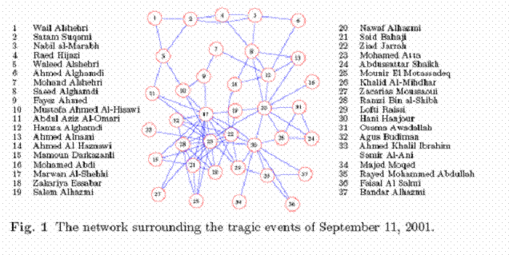
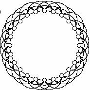

Assignments: Social Network Analysis
Assignment 1: Figure 1 shows the terrorist network surrounding the tragic event of September 11, 2001. The nodes are the organizational representatives and the edges are the information-links through which the terrorist activity propagated. As a responsible human being we would definitely like to analyze the various structural properties of this network in order to learn understand how we can disable such network in future. We would like to study the following properties:
Your job is to compute the above parameters and reason in the perspective of the network why the computed parameter is significant. (5)
Assignment 2 : You are given a sexual network from which you need to infer whether a person is prone to STD by inspecting a metric of the network. Would it be reasonable to check the degree centrality of the network? Justify you answer with a suitable example.(2)
Assignment 3 : For a Zipf’s distribution, the rank (r) of the income of a person is related to the amount of the income (n) as n ~ r -α where α is a positive constant. However, Pareto was interested in the distribution of income. Instead of asking what the rth largest income is, he asked how many people have an income greater than n. He found that this number Pn is related to n as Pn ~ n-β where β is a positive constant. Show that the Pareto distribution can be derived given the Zif’s distribution. (2)
Assignment 4 : Fig. 2 shows a 3-regular lattice. Find the clustering coefficient of the lattice. (2)

Fig. 2. A 3- regular lattice